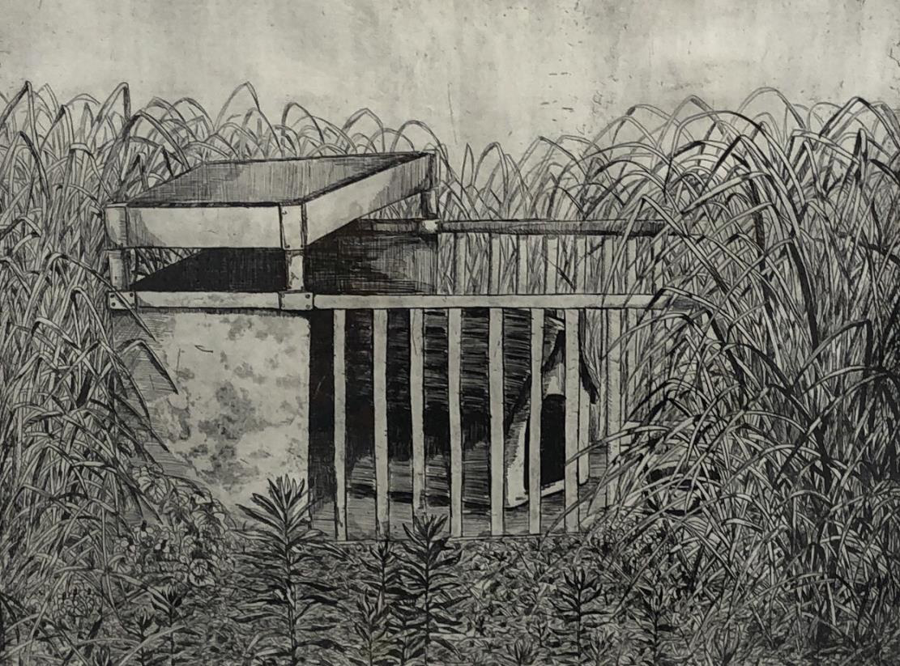
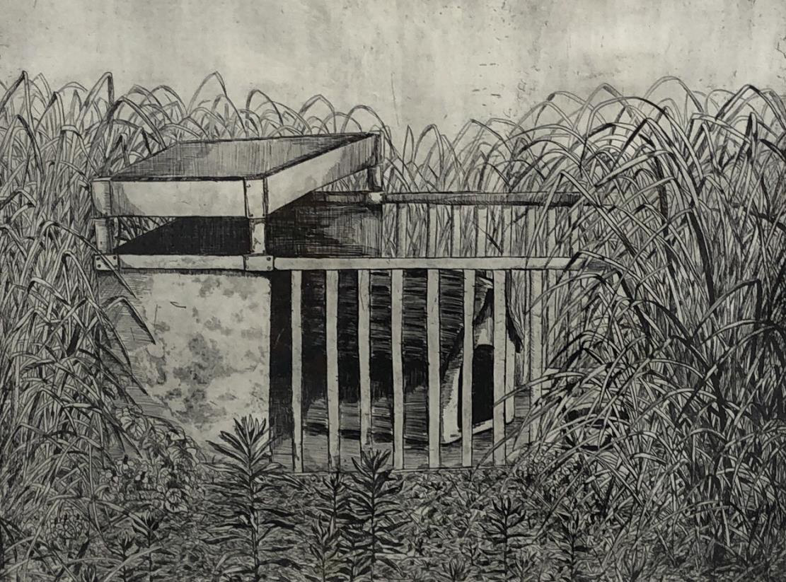
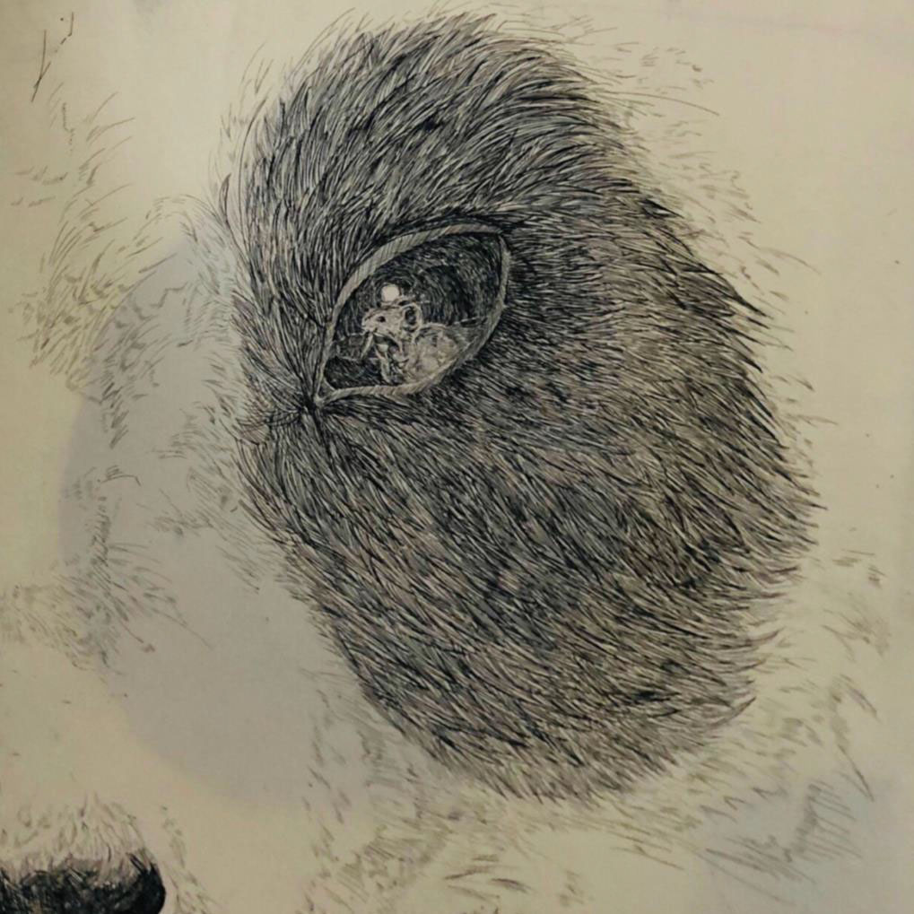

生活圏（銅版画）
生活空間をモチーフにした銅版画シリーズです。「生活圏」をテーマに、普段見慣れた部屋や水槽、犬小屋といったオブジェクトを切り取りました。
銅版画特有の腐食技法を用いることで、物質の持つ重みや、空間に漂う静けさを表現しています。

 

パンダ（銅版画）
パンダをモチーフに選び、デフォルメ的印象とそのギャップについてを描きました。動物の毛並みの柔らかさを実験的に表現した作品です。
モノクロームの世界の中で、どこまで質感をリアルに感じさせることができるか、線の密度と余白のバランスを計算して制作しました。対象の特徴を捉え、最適な手法で出力するプロセスを重視しています。

街並み（シルクスクリーン）
街の風景を写真から抽出し、シルクスクリーンで表現しました。
写真をそのまま使用するのではなく、日常的に使用する自然加工物に印刷を行い、都会と自然の再解釈を行いました。自然露光のため、試行を繰り返した長期的な制作物となりました。


風景（写真製版）
自ら撮影した写真を刷り上げた写真製版作品です。
デジタルな「写真」という媒体を、アナログな「版画」に落とし込む過程で、インクの調色や紙の選定にこだわりました。